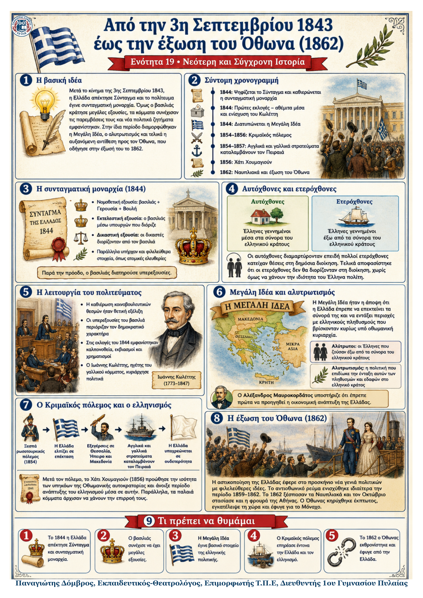

Δεν βρέθηκε η λέξη ή η φράση μέσα στην ενότητα.
1Η βασική ιδέα
Με το Σύνταγμα του 1844 καθιερώθηκε η συνταγματική μοναρχία, όμως ο Όθωνας διατήρησε ισχυρές εξουσίες. Την ίδια περίοδο κυριάρχησαν η διαμάχη αυτοχθόνων και ετεροχθόνων, η Μεγάλη Ιδέα και οι επιπτώσεις του Κριμαϊκού πολέμου. Η αυταρχική λειτουργία του πολιτεύματος και η αυξανόμενη αντίδραση οδήγησαν τελικά στην έξωση του βασιλιά το 1862.
2Ιστορικό πλαίσιο
Το κίνημα της 3ης Σεπτεμβρίου 1843 ανάγκασε τον Όθωνα να δεχτεί τη σύγκληση Εθνοσυνέλευσης και την ψήφιση Συντάγματος.
Το Σύνταγμα του 1844 ίδρυσε συνταγματική μοναρχία, αλλά ο βασιλιάς συνέχισε να ελέγχει την κυβέρνηση και τη δικαιοσύνη.
Τα κόμματα παρέμεναν ανεπίσημα και στις εκλογές του 1844 χρησιμοποιήθηκαν καλπονοθεία, εκβιασμοί και χρηματισμοί.
Η Ελλάδα ήταν μικρή και φτωχή, ενώ πολλοί Έλληνες ζούσαν έξω από τα σύνορά της, κυρίως στην Οθωμανική αυτοκρατορία.
3Χρονογραμμή: από το Σύνταγμα στην έξωση
| 1844 | Ψηφίζεται το Σύνταγμα· καθιερώνεται συνταγματική μοναρχία και διατυπώνεται η Μεγάλη Ιδέα. |
|---|---|
| 1844–1847 | Πρωθυπουργία Ιωάννη Κωλέττη· συνεργασία με τον Όθωνα και συχνές παραβιάσεις του Συντάγματος. |
| 1854–1856 | Κριμαϊκός πόλεμος· ελληνικές εξεγέρσεις και αγγλογαλλική κατοχή του Πειραιά (1854–1857). |
| 1859–1862 | Ενισχύεται το αντιοθωνικό ρεύμα και εμφανίζεται νέα γενιά πολιτικών με φιλελεύθερες ιδέες. |
| 1862 | Ναυπλιακά, στάση της φρουράς της Αθήνας και έξωση του Όθωνα τον Οκτώβριο. |
Κεντρική μεταβολή: η Ελλάδα απέκτησε κοινοβουλευτικούς θεσμούς, αλλά η βασιλική υπερεξουσία εμπόδισε την ομαλή λειτουργία τους.
4Τα κύρια σημεία
Το Σύνταγμα του 1844. Η νομοθετική εξουσία ανήκε στον βασιλιά, τη Γερουσία και τη Βουλή. Ο βασιλιάς διόριζε και έπαυε υπουργούς και δικαστές. Υπήρχαν, όμως, άρθρα που προστάτευαν ατομικές ελευθερίες.
Αυτόχθονες και ετερόχθονες. Οι αυτόχθονες είχαν γεννηθεί μέσα στα σύνορα του κράτους, ενώ οι ετερόχθονες έξω από αυτά. Μετά από πιέσεις, οι ετερόχθονες αποκλείστηκαν από πολλές θέσεις της διοίκησης.
Η λειτουργία του πολιτεύματος. Οι κοινοβουλευτικοί θεσμοί ήταν θετική εξέλιξη, αλλά οι μεγάλες εξουσίες του βασιλιά περιόριζαν τη δημοκρατία. Ο Κωλέττης παραβίαζε το Σύνταγμα και χρησιμοποιούσε κρατικούς πόρους για ψηφοθηρία.
Μεγάλη Ιδέα και αλυτρωτισμός. Η Μεγάλη Ιδέα στόχευε στη διεύρυνση των συνόρων ώστε να ενταχθούν περιοχές με ελληνικούς πληθυσμούς. Οι Έλληνες εκτός συνόρων ονομάστηκαν αλύτρωτοι και η σχετική πολιτική αλυτρωτισμός.
Κριμαϊκός πόλεμος. Η Ελλάδα προσπάθησε να εκμεταλλευτεί τον ρωσοτουρκικό πόλεμο, αλλά Αγγλία και Γαλλία κατέλαβαν τον Πειραιά και επέβαλαν ουδετερότητα. Μετά τον πόλεμο τα παλαιά κόμματα έχασαν την επιρροή τους.
5Δύο αντίθετες αντιλήψεις για την πορεία της Ελλάδας
Ιωάννης Κωλέττης: πρώτα εδαφική επέκταση και απελευθέρωση των αλύτρωτων Ελλήνων. Αλέξανδρος Μαυροκορδάτος: πρώτα οικονομική ανάπτυξη και ύστερα εδαφική επέκταση. Η πρώτη αντίληψη απέκτησε περισσότερους υποστηρικτές.
6Πώς οδηγήθηκε ο Όθωνας στην έξωση
| Βασιλική υπερεξουσία | → | Παραβιάσεις του Συντάγματος | → | Αντιοθωνικό ρεύμα | → | Έξωση το 1862 |
|---|
Την περίοδο 1859–1862 το αντιοθωνικό ρεύμα ενισχύθηκε. Η επανάσταση στο Ναύπλιο τον Φεβρουάριο του 1862 απέτυχε, αλλά έδειξε τη φθορά του καθεστώτος. Τον Οκτώβριο στασίασε η φρουρά της Αθήνας. Ο Όθωνας κηρύχθηκε έκπτωτος και έφυγε για το Μόναχο.
7Τι πρέπει να θυμάμαι
Το Σύνταγμα του 1844 καθιέρωσε συνταγματική μοναρχία, αλλά άφησε ισχυρές εξουσίες στον βασιλιά.
Η διαμάχη αυτοχθόνων και ετεροχθόνων αφορούσε κυρίως τις θέσεις στη δημόσια διοίκηση.
Ο Κωλέττης διατύπωσε τον όρο Μεγάλη Ιδέα το 1844.
Ο Κριμαϊκός πόλεμος οδήγησε σε αγγλογαλλική κατοχή του Πειραιά και κρίση των παλαιών κομμάτων.
Τα Ναυπλιακά έδειξαν τη φθορά του καθεστώτος.
Τον Οκτώβριο του 1862 ο Όθωνας κηρύχθηκε έκπτωτος και εγκατέλειψε την Ελλάδα.
